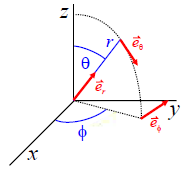

This 3D fit function describes a Gaussian function with three different widths $( w_1,w_2,w_3)$ along its three major axes $( \vec{e}_r, \vec{e}_\phi, \vec{e}_\theta )$: $$bmath:f(\vec{r})=A_0+A\cdot\exp\left[-2\cdot\frac{\left((\vec{r}-\vec{x}_0)\cdot(\mathrm{\mathbf{M}}(\alpha)\vec{e}_\theta)\right)^2}{w_1^2}-2\cdot\frac{\left((\vec{r}-\vec{x}_0)\cdot(\mathrm{\mathbf{M}}(\alpha)\vec{e}_\phi)\right)^2}{w_2^2}-2\cdot\frac{\left((\vec{r}-\vec{x}_0)\cdot\vec{e}_r\right)^2}{w_3^2}\right]$$ The axes are defined as the three unit vectors of spherical coordinates $( (r,\theta,\phi)^T )$:
|  | $[ \vec{e}_r=\left(\begin{matrix}\sin(\theta)\cdot\cos(\phi)\\\sin(\theta)\cdot\sin(\phi)\\\cos(\theta)\end{matrix}\right) ]$ $[ \vec{e}_\theta=\left(\begin{matrix}\cos(\theta)\cdot\cos(\phi)\\\cos(\theta)\cdot\sin(\phi)\\-\sin(\theta)\end{matrix}\right) ]$ $[ \vec{e}_\phi=\left(\begin{matrix}-\sin(\phi)\\\cos(\phi)\\0\end{matrix}\right) ]$ |
In the fit function, given above, each summand in the exponential is the projection of the coordinate $(\vec{r})$ onto one of these three perpendicular unit vectors. So one size of the gaussian is associated with one of these three major axes. The orientation of the 3D Gaussian in space is then given by the three vectors $( \theta,\phi,\alpha )$.
$$list:fitfunc_params:psf3d_gaussian$$